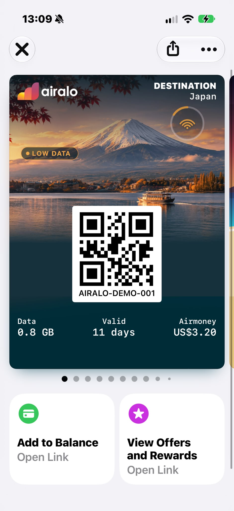
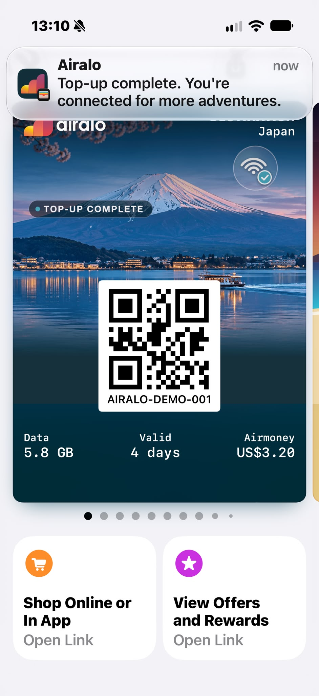
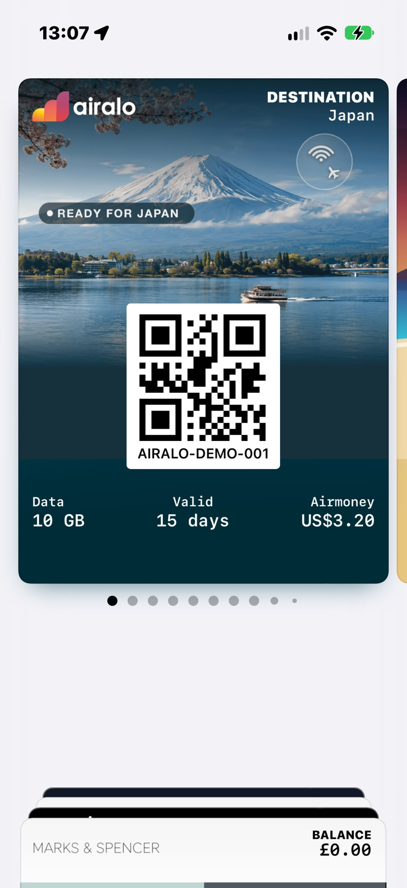

I built the demo on Fuse Wallet.
I brought the travel-pass use case together on the platform, from the pass landing page to changing card states and message examples.
USE-CASE BUILD · CARD DESIGN · GRAPHICS
I created the use case, designed the cards and produced the graphics. I built the experience on Fuse Wallet.
I brought the Japan plan’s data, validity and Airmoney into a travel pass, with distinct states and messages from arrival to top-up.



Application use-case demo. I built this on Fuse Wallet. The screenshots show my demo; they do not imply Airalo commissioned or launched it.
MY CONTRIBUTION
I owned the use-case build, card design and graphics shown here. Fuse Wallet provided the wallet-pass platform.
I brought the travel-pass use case together on the platform, from the pass landing page to changing card states and message examples.
I designed the destination, status, data, validity and Airmoney hierarchy so the same pass could communicate different moments in the journey.
I created the destination-led card graphics and visual treatments for ready, connected, low-data and top-up-complete states.
EXPLORE MY DEMO
Choose a state or follow the journey. I’ve kept the original screenshots and their sample values together.
My original Fuse Wallet demo capture.
Open it to see the
complete, unchanged screenshot.
This local showcase replays my original screens. It does not install a pass, activate an eSIM, buy data or send a notification.
MY TASK / MY DECISIONS / MY OUTPUT
I used the card, status and message as parts of one experience. This demo shows the design and build; it does not establish commercial results.
I wanted to show how an Airalo trip pass could keep useful plan information close to hand during a Japan trip.
I retained the data, validity and Airmoney fields while changing the status treatment and graphics to suit each moment.
I showed connection, remaining-data, validity, top-up and balance messages as distinct examples, rather than one generic reminder.
I produced the graphics and card design, and built the use case on Fuse Wallet. I would test whether travellers understand the state and next action; improved engagement remains a hypothesis.
MY ORIGINAL SOURCE SCREENS
I’ve included all twelve original captures, including the landing page and additional notification examples. Open any screen at its original resolution.
I built the use case on Fuse Wallet and designed the cards and graphics shown in the original screenshots. This portfolio page adds a local, keyboard-accessible replay of those screens; it is not a second wallet platform or a live Airalo integration.
The sample shows 0.8 GB before a top-up and 5.8 GB afterwards, with four days remaining in both of those captures. Airmoney later changes from US$3.20 to US$3.73. I preserve these values as shown, without inferring a real plan price, reward formula or expiry policy.
The Apple and Google Wallet entry points appear in my supplied landing-page capture. The wallet screens shown here are iPhone captures. No native pass download or real notification is triggered by this local showcase.
Airalo, Apple Wallet and Google Wallet branding remain their owners’ property. I make no claim of Airalo commission, endorsement, production deployment or measured conversion uplift.